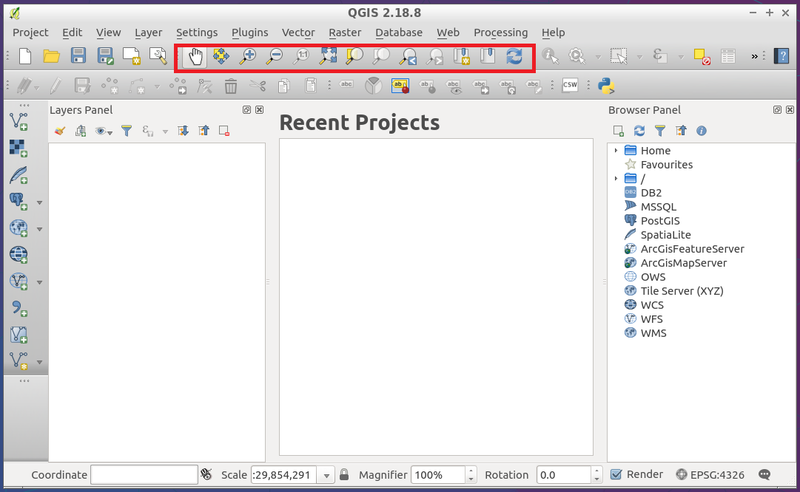
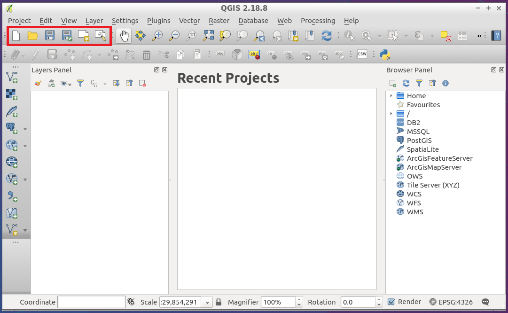
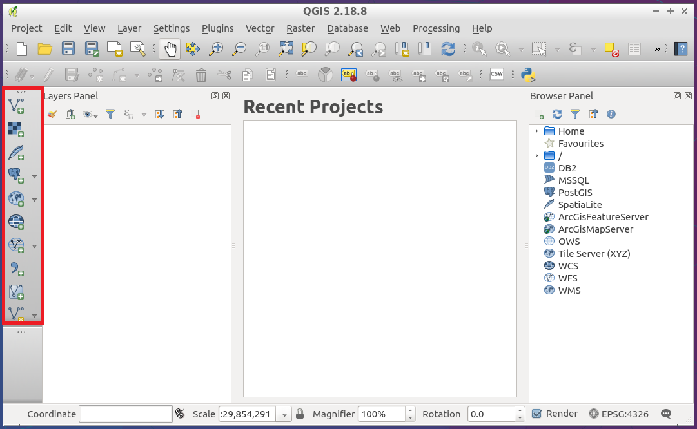
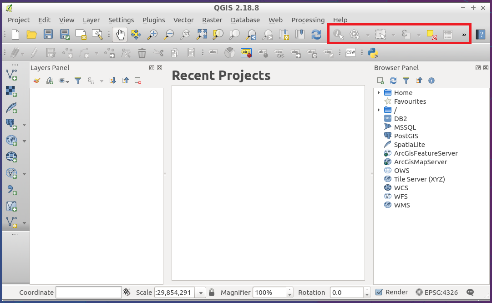
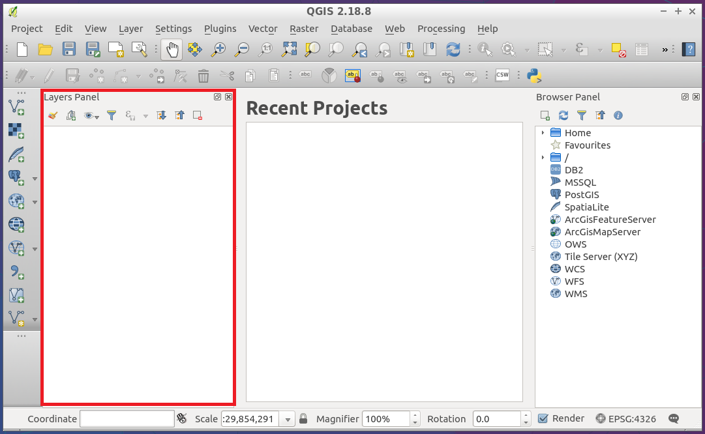
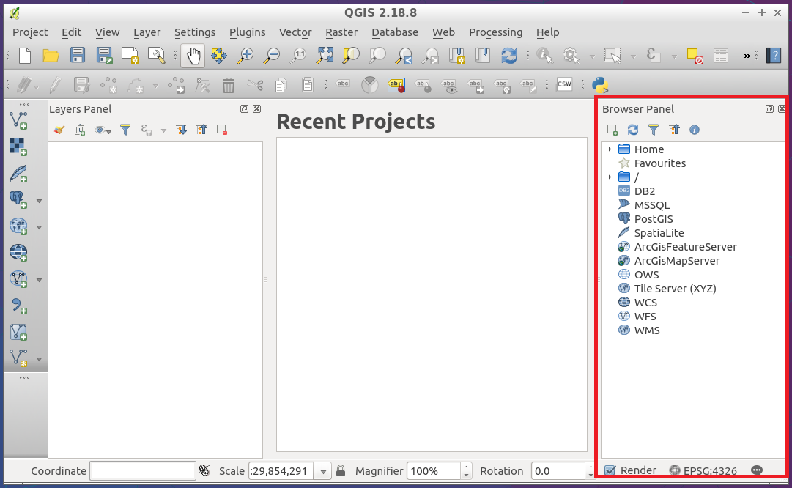

Mireseerdhet Maptime-rs 😆
@
map 🕕
Nga

...
...Ne

Te dhenat jane...Ku??
Si ti marrim?
Per bash ninjas:
wget -o myPlace https://www.openstreetmap.org/api/0.6/map?bbox=19.7964,41.3099,19.8608,41.3381
Per bash ninjas:
wget -o myPlace https://www.openstreetmap.org/api/0.6/map?bbox=19.7964,41.3099,19.8608,41.3381
FOSS GIS made with ♥
QGIS Desktop

QGIS Browser

The UI
Map Navigation

File Toolbar

Manage Layers

Atribute Toolbar

Layers Panel

Browser Panel

View -> Toolbars

Formatet?
Raster -> GDAL
Vector -> OGR
DB -> PostGIS, Oracle, Spatialite, etc
Tabular(csv, tsv, etc)
Mapping Time!! 😁
 Export Tab @openstreetmap.org
Export Tab @openstreetmap.org